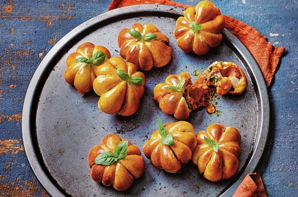

Mini pumpkin burgers

Ingredients
- Beyond meat burgers
- Ready to roll pizza dough
- BBQ sauce
- Tomato paste
- Shredded cheese
- Red onions
Preparation
- Split the burgers in desired sizes and fry until done
- Caramelise red onions by slowly frying them on sunflower oil
- Roll out the pizza dough and split the dough in sizes slightly bigger than the burger patties you fried
- Mix tomato paste and BBQ sauce to create the burger sauce
- Assemble the burgers by adding the sauce, burger, cheese and onions
- Wrap the burgers with strings to create pumpkin shapes
- Don't press the string tight, the dough will expand
- Let the burgers rest in the fridge until your oven is ready
- Mix some olive oil with turmeric to add color and "paint" your burgers
- Bake at 180*C for 30-45 minutes until nice and brown
- Before serving, add pretzel sticks for stems